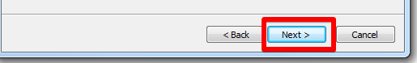

Обов'язкове програмне забезпечення:
Необхідно встановити Google Chrome для подальшої роботи з програмним забезпеченням
Встановлення доповнення
- Відкрийте посилання UnityBase extension, щоб встановити доповнення
- Натисніть на кнопку +FREE, як це показано на малюнку:
- Підтвердіть бажання встановити це доповнення, як це показано на малюнку:
- Переконайтися в успішному встановленні доповнення, як це показано на малюнку:
- Відкрийте посилання UnityBase plugin, щоб встановити плагін. В нижній частині Google Chrome з'явиться завантажена програма:
- Натисніть на цю кнопку, щоб запустити програму встановлення плагіну
- Оберіть з переліку мову встановлення та натисніть кнопку OK для продовження:
- Далі на всіх вікнах натискуйте кнопку "Next >" до завершення встановлення: 


Додаткова інформація
- Керуйте доповненнями на сторінці розширень. Докладніше про керування розширеннями
- Видаляйте доповнення на сторінці розширень. Докладніше про видалення розширеннями.